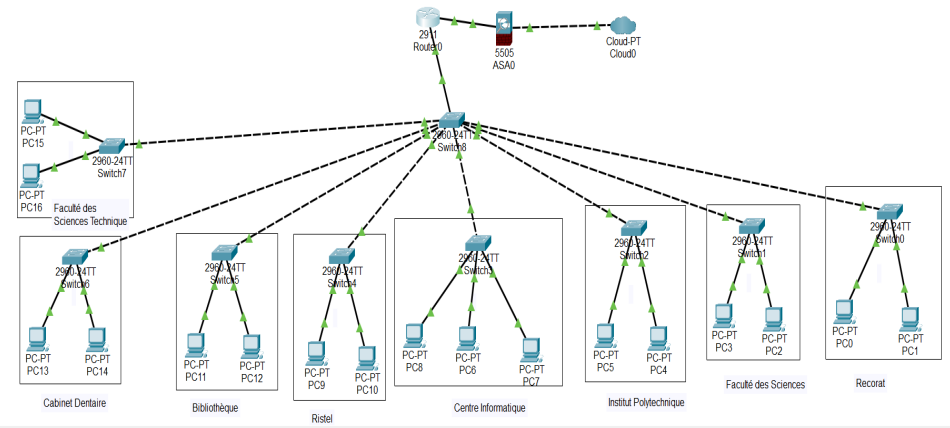
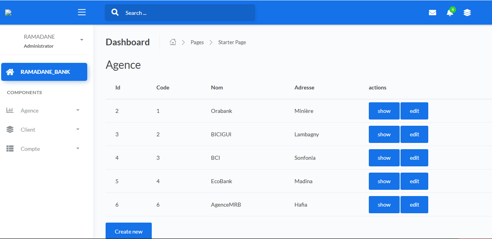
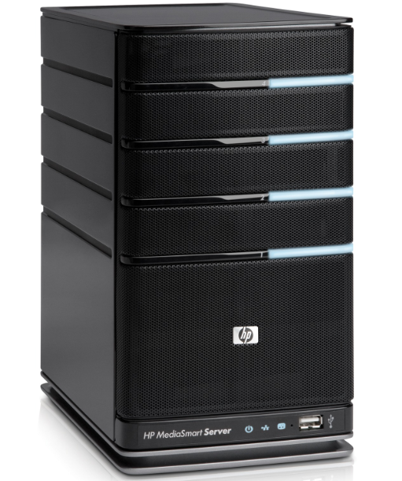

Mes Projets
Durant mes études universitaires, j'ai eu à realiser beaucoup de projet dans le domaine informatique.
Conception d'un réseau local au sein de l'université Gamal
Ce projet consiste à mettre en pratique les notions que j'avais acquis en réseau
Création d'une application symfony permettant de gérer une banque
Cette application à été crée avec symfony qui est framework de PHP. Elle permet de gérer une banque en traitement tout type de transactions(dêpot, rétrait, virement) dans les comptes des utilisateurs. Les clients sont libre de créer leur compte qu'il soit courant ou epargne mais ils doivent forcement être membre d'une agence si non il serait impossible de créer le compte.
Installation et configuration d'un serveur Linux pour une salle de classe
Ce projet consiste à installer et configurer un serveur pour une salle de TP. Les étudiants se trouvant dans la salle peuvent partager des dossiers entre eux. Plusieurs niveaux d'utilisateurs y sont(professeurs /administrateur, autres encadreurs, élève/etudiant).
